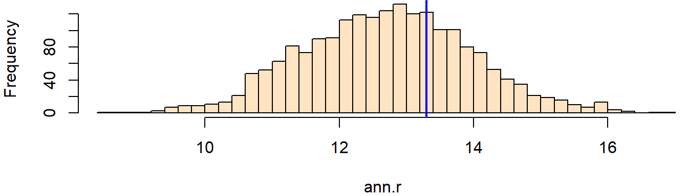

# Load packages
library(sf)
library(spatstat)
# Read state polygon data
s <- st_read("MA.shp")
w <- as.owin(s)
w.km <- rescale.owin(w, 1000) # rescale map units to km
# Read Walmart point data
s <- st_read("Walmarts.shp")
p <- as.ppp(s)
marks(p) <- NULL # Remove attribute table (simplifies plot operations)
p.km <- rescale.ppp(p, 1000) # Rescale map units to km
Window(p.km) <- w.km ANN Hypothesis Testing: homogeneous case
Data for this tutorial can be downloaded from here. Don’t forget to unzip the files to a dedicated folder on your computer.
In RStudio, don’t forget to set the R session to the project folder via Session >> Set Working Directory >> Choose Directory.
Load and prep the dataset
The following chunk of code loads the shapefiles into R. They are then converted to spatial formats readable by the spatstat functions. We will also convert the mapping units from meters to kilometers using the rescale.* functions. This last step will generate distance values of kilometers instead of meters when we compute the average nearest neighbor value. Much like ArcGIS, R adopts the layer’s coordinate system’s map units when expressing distance or area values, so by changing the layer’s default map units, we end up with output distance values that are no more than 3 or 4 digits long and easier to “interpret”.
Average nearest neighbor analysis
First, we’ll compute the observed Walmart ANN statistic.
ann.p <- mean(nndist(p.km, k=1))
ann.pThe observed average nearest neighbor is 13.29 km.
Is our observed ANN value consistent with a random process?
In this hypothesis test, we are hypothesizing that the process that generated the observed distribution of Walmart stores was completely random. This is our null hypothesis. We’ll therefore compare our observed ANN value to the range of ANN values we could expect to get if the Walmart stores were randomly distributed. This will involve randomly shuffling the Walmart store locations, then computing the average distance between the randomly distributed stores. This process is repeated many times such that a distribution of ANN values under the assumption of complete randomness (the null hypothesis) is generated.
n <- 1999 # Number of times to run the simulation
ann.r <- vector() # Create an empty object to be used to store the simulated ANN values
for (i in 1:n){
rand.p <- rpoint(n = p.km$n, win = w.km) # Generate random point locations
ann.r[i] <- mean(nndist(rand.p, k = 1)) # Compute and store the simulated ANN value
}In the above loop, the function rpoint is passed two parameters: n = p.km$n and win = w.km. The first tells the function how many points to randomly generate (i.e. the same number of points as that in the Walmart points layer which we can extract from the p.km$n object). The second tells the function to confine the randomly generated points to the extent defined by w.km (the MA polygon).
Note that after running the last simulation, you can view its set of randomly generated points via:
plot(rand.p, pch = 16, main = NULL)Given that this is a random process, your output will look different–as expected.
Next, we plot the histogram of the simulated ANN values then add a blue line showing where our observed ANN value lies relative to the distribution of simulated ANN values under the null. (Your histogram may look different given the random nature of the simulation).
hist(ann.r, breaks = 40, col = "bisque", xlim = range(ann.p, ann.r), main = NULL)
abline(v = ann.p, col = "blue", lw = 2) # lw = 2 increases the line width
The test suggests that our observed ANN value may not be that different from the 1999 ANN values we simulated under the assumption that the stores are randomly distributed. Our observed values is a tad bit to the right of the center of the distribution suggesting that our observed ANN value might be on the dispersed side of the range of values (a larger than expected ANN value suggests a more dispersed set of points, and a smaller than expected ANN value suggests a more clustered set of points).
Extracting a p-value from the simulation
We first need to find the end of the distribution that is closest to the observed ANN value. We then find the number of simulated ANN values more extreme than our observed ANN value. Finally, we divide that count by the total number of simulations. Note that this is a so-called one-sided P-value. See lecture notes for more information.
N.greater <- sum(ann.r > ann.p)
p <- min(N.greater + 1, n + 1 - N.greater) / (n + 1)
p[1] 0.3275
About 33% of the simulated ANN value were more extreme than our obserbved ANN value of 13.29. Hence, the p-value suggests that we would be 33% wrong in rejecting the null hypothesis that a random process could have generated a pattern that is more dispersed than our observed pattern.
NOTES:
If you are familiar with the concepts of a one-sided and two-sided test, you could double the p-value and state that “… there is a 66% chance of being wrong in rejecting the null hypothesis that a random process could have generated a point pattern similar to our observed pattern”. Note the lack of reference to greater than or less than.
Just because our hypothesis test suggests that our observed ANN value is consistent with a random process does not imply that a random process was the process behind the distribution of Walmart stores (in fact, it’s quite doubtful that Walmart executives assign store location at random). All that a hypothesis test can do is state whether a hypothesized process could be one of many other processes that generated the pattern observed in our dataset.